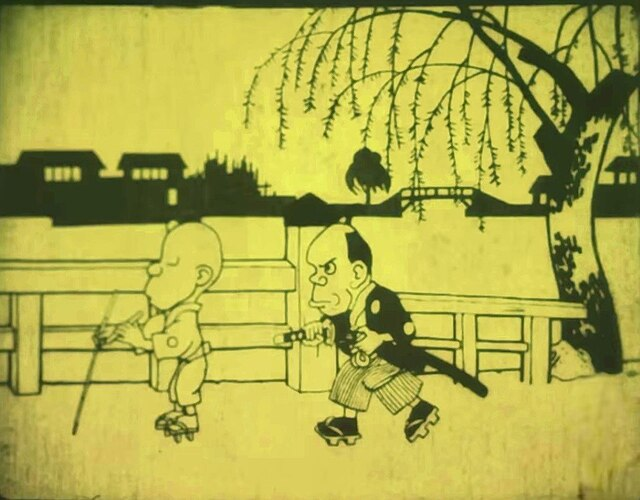

Welcome to AnimeWiki
The history of anime can be traced back to the start of the 20th century, with the earliest verifiable films dating from 1917.[1] Before the advent of film, Japan already had a rich tradition of entertainment with colourful painted figures moving across the projection screen in utsushi-e (写し絵), a particular Japanese type of magic lantern show popular in the 19th century. Possibly inspired by European phantasmagoria shows, utsushi-e showmen used mechanical slides and developed lightweight wooden projectors (furo) that were handheld so that several performers could each control the motions of different projected figures.[2][3] The second generation of animators in the late 1910s included Ōten Shimokawa, Jun'ichi Kōuchi and Seitarō Kitayama, commonly referred to as the "fathers" of anime.[4] Propaganda films, such as Momotarō no Umiwashi (1943) and Momotarō: Umi no Shinpei (1945), the latter being the first anime feature film, were made during World War II. During the 1970s, anime developed further, with the inspiration of Disney animators, separating itself from its Western roots, and developing distinct genres such as mecha and its super robot subgenre. Typical shows from this period include Astro Boy, Lupin III and Mazinger Z. During this period several filmmakers became famous, especially Hayao Miyazaki and Mamoru Oshii. In the 1980s, anime became mainstream in Japan, experiencing a boom in production with the rise in popularity of anime like Gundam, Macross, Dragon Ball, and genres such as real robot, space opera and cyberpunk. Space Battleship Yamato and Super Dimension Fortress Macross also achieved worldwide success after being adapted respectively as Star Blazers and Robotech. The 1988 film Akira went on to become an international success. Later, in 2004, the same creators produced Steamboy, which became the most expensive anime film. Spirited Away shared the first prize at the 2002 Berlin Film Festival and won the 2003 Academy Award for Best Animated Feature, while Innocence: Ghost in the Shell was featured at the 2004 Cannes Film Festival.
The Dull Sword (Japanese: なまくら刀, Hepburn: Namakura Gatana) is a Japanese animated short film produced by Jun'ichi Kōuchi in 1917. It was rediscovered by an antique shop employee in Osaka in March 2008.[2][3] This film is a 4-minute silent short that tells a story about a foolish rōnin's purchase of a dull-edged sword and subsequent attempts at tsujigiri. It was released on June 30, 1917, and is among the very earliest examples of anime.
